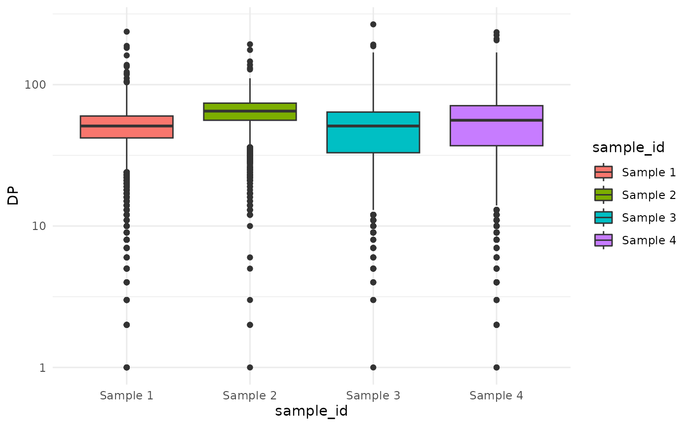

cevodata construction
cevodata_construction.RmdIntro
cevodata class is a data structure designed to store the
mutational data (SNVs, CNAs), metadata, and the analytical results
(e.g. mathematical models) on a cohort of tumor samples.
cevodata structure
cevodata is an S3 R class with the
following elements:
- metadata - tibble that associates sample IDs with patient IDs and contains all metadata about patients (such as sex, age, or molecular subtype of tumor) and samples (such as purity estimates),
- SNVs - list of tibbles of SNVs and indels. Multiple tibbles can be stored with alternative lists of variants (different variant callers, data filtering settings, etc.),
- CNAs - list of tibbles of CNAs. Multiple tibbles can be stored with alternative lists of variants,
- stats - list of tibbles of statistics calculated for each sample, such as the cumulative tails, \(M(f) ~ 1/f\) statistics, SFS spectra, and other sample-level and patient level statistics
- models - stores models fitted by
cevomod. All items in this list must be an objects ofcv_subitemclass, in particular allmodelcomponents other thanmodel$infoormodel$settingsmust be a plain tibbles withpatient_idorsample_idcolumns. - misc - currently not used
- settings - list that stores the names of the default SNV and CNA tibbles and the name of an active (last fitted) model object.
Adding data
The user interface of cevomod was inspired by the tidyverse R
packages ecosystem and is pipe-oriented. Most functions accept the
cevodata as the first argument and return modified cevodata. This
convention allows building pipelines, for e.g., to compose the cevodata
object by adding new data components step by step. Let’s create an
example cevodata object. We will use the
test_data dataset, which contains SNVs, CNAs, and metadata
for 4 artificial samples.
Test data
suppressPackageStartupMessages({
library(cevodata)
library(dplyr)
library(tibble)
library(ggplot2)
})
theme_set(theme_minimal())
snvs <- SNVs(test_data)
cnas <- CNAs(test_data)
metadata <- get_metadata(test_data)snvs tibble contains SNVs for 4 artificial samples. It
11 columns describing the 16,000 variants in 4 samples. It needs to
contain:
- sample_id
- mutation_id and/or chrom, pos, ref, and alt columns
- VAF column and/or ref_reads and alt_reads columns
glimpse(snvs)
#> Rows: 16,000
#> Columns: 11
#> $ sample_id <chr> "Sample 1", "Sample 1", "Sample 1", "Sample 1", "Sample 1"…
#> $ chrom <chr> "chr1", "chr1", "chr1", "chr1", "chr1", "chr1", "chr1", "c…
#> $ pos <int> 1, 2, 3, 4, 5, 6, 7, 8, 9, 10, 11, 12, 13, 14, 15, 16, 17,…
#> $ gene_symbol <chr> NA, NA, NA, NA, NA, NA, NA, NA, NA, NA, NA, NA, NA, NA, NA…
#> $ ref <chr> NA, NA, NA, NA, NA, NA, NA, NA, NA, NA, NA, NA, NA, NA, NA…
#> $ alt <chr> NA, NA, NA, NA, NA, NA, NA, NA, NA, NA, NA, NA, NA, NA, NA…
#> $ ref_reads <dbl> 25, 22, 21, 34, 62, 4, 33, 31, 25, 41, 42, 64, 32, 29, 42,…
#> $ alt_reads <dbl> 29, 19, 20, 2, 1, 3, 34, 30, 17, 31, 1, 1, 25, 31, 40, 1, …
#> $ impact <chr> NA, NA, NA, NA, NA, NA, NA, NA, NA, NA, NA, NA, NA, NA, NA…
#> $ VAF <dbl> 0.536, 0.462, 0.488, 0.078, 0.030, 0.444, 0.507, 0.483, 0.…
#> $ DP <int> 54, 41, 41, 36, 63, 7, 67, 61, 42, 72, 43, 65, 57, 60, 82,…Similarly, cnas tibble contains the Copy Number
Alterations for 4 artificial samples. It contains 8 columns, where the
sample_id, chrom, start, and end are mandatory.
glimpse(cnas)
#> Rows: 8
#> Columns: 8
#> $ sample_id <chr> "Sample 1", "Sample 1", "Sample 2", "Sample 2", "Sample 3", …
#> $ chrom <chr> "chr1", "chr2", "chr1", "chr2", "chr1", "chr2", "chr1", "chr…
#> $ start <dbl> 1, 1, 1, 1, 1, 1, 1, 1
#> $ end <dbl> 4000, 4000, 4000, 4000, 4000, 4000, 4000, 4000
#> $ total_cn <dbl> 2, 1, 2, 1, 2, 1, 2, 1
#> $ major_cn <dbl> 1, 1, 1, 1, 1, 1, 1, 1
#> $ minor_cn <dbl> 0, 0, 0, 0, 0, 0, 0, 0
#> $ normal_cn <dbl> 2, 2, 2, 2, 2, 2, 2, 2metadata tibble associates sample IDs with patient IDs,
and contains the data on patients’ sex and samples’ purity.
metadata
#> # A tibble: 4 × 4
#> patient_id sample_id sex purity
#> <chr> <chr> <chr> <dbl>
#> 1 Patient 1 Sample 1 male 1
#> 2 Patient 2 Sample 2 male 0.7
#> 3 Patient 3 Sample 3 female 1
#> 4 Patient 4 Sample 4 male 1Prepare data
Let’s see what the sequencing depth of these variants is.
ggplot(snvs, aes(sample_id, DP, fill = sample_id))+
geom_boxplot() +
scale_y_log10()
Variants with the lowest sequencing depth have the least accurate VAF values. One might want to filter out low-frequency variants to reduce the noise. Let’s remove the variants with a sequencing depth of less than 20.
filtered_snvs <- snvs |>
filter(DP >= 20)Create cevodata object and add data
Now let’s create a cevodata and add all these data,
including the all SNVs and the SNVs that pass the filter.
cd <- init_cevodata(name = "Training cevodata") |>
add_SNV_data(filtered_snvs, name = "filtered_snvs") |>
add_SNV_data(snvs, name = "all_Mutect_snvs") |>
add_CNA_data(cnas) |>
add_metadata(metadata)
cd
#> <cevodata> dataset: Training cevodata
#> SNV assays: filtered_snvs, all_Mutect_snvs (default)
#> CNA assays: cnas (default)
#> 4 cases, 4 samples, 1 sample per case
#> 16000 mutations total, 4000 +/- 0 mutations per case
#> Active models:We can see that the default SNV tibble is the last one added (all
SNVs). Let’s assume that we want to use the filtered SNVs only. We can
change the default SNV tibble using the default_SNVs()
function. Similarly, one can use default_CNAs() function to
choose the default CNAs tibble.
default_SNVs(cd) <- "filtered_snvs"
cd
#> <cevodata> dataset: Training cevodata
#> SNV assays: filtered_snvs (default), all_Mutect_snvs
#> CNA assays: cnas (default)
#> 4 cases, 4 samples, 1 sample per case
#> 15072 mutations total, 3768 +/- 149 mutations per case
#> Active models:Now, in all other steps the filtered SNVs will be used by default.
Getting data
To get the SNV data from the object, one can use the
SNVs() function. It returns the default SNV tibble.
SNVs(cd)
#> # A tibble: 15,072 × 11
#> sample_id chrom pos gene_symbol ref alt ref_reads alt_reads impact
#> * <chr> <chr> <int> <chr> <chr> <chr> <dbl> <dbl> <chr>
#> 1 Sample 1 chr1 1 NA NA NA 25 29 NA
#> 2 Sample 1 chr1 2 NA NA NA 22 19 NA
#> 3 Sample 1 chr1 3 NA NA NA 21 20 NA
#> 4 Sample 1 chr1 4 NA NA NA 34 2 NA
#> 5 Sample 1 chr1 5 NA NA NA 62 1 NA
#> 6 Sample 1 chr1 7 NA NA NA 33 34 NA
#> 7 Sample 1 chr1 8 NA NA NA 31 30 NA
#> 8 Sample 1 chr1 9 NA NA NA 25 17 NA
#> 9 Sample 1 chr1 10 NA NA NA 41 31 NA
#> 10 Sample 1 chr1 11 NA NA NA 42 1 NA
#> # ℹ 15,062 more rows
#> # ℹ 2 more variables: VAF <dbl>, DP <int>Alternatively, other SNVs data can be requested using the
name argument
SNVs(cd, name = "all_Mutect_snvs")
#> # A tibble: 16,000 × 11
#> sample_id chrom pos gene_symbol ref alt ref_reads alt_reads impact
#> * <chr> <chr> <int> <chr> <chr> <chr> <dbl> <dbl> <chr>
#> 1 Sample 1 chr1 1 NA NA NA 25 29 NA
#> 2 Sample 1 chr1 2 NA NA NA 22 19 NA
#> 3 Sample 1 chr1 3 NA NA NA 21 20 NA
#> 4 Sample 1 chr1 4 NA NA NA 34 2 NA
#> 5 Sample 1 chr1 5 NA NA NA 62 1 NA
#> 6 Sample 1 chr1 6 NA NA NA 4 3 NA
#> 7 Sample 1 chr1 7 NA NA NA 33 34 NA
#> 8 Sample 1 chr1 8 NA NA NA 31 30 NA
#> 9 Sample 1 chr1 9 NA NA NA 25 17 NA
#> 10 Sample 1 chr1 10 NA NA NA 41 31 NA
#> # ℹ 15,990 more rows
#> # ℹ 2 more variables: VAF <dbl>, DP <int>Similarly, CNAs can be obtained using the CNAs()
function.
CNAs(cd)
#> # A tibble: 8 × 8
#> sample_id chrom start end total_cn major_cn minor_cn normal_cn
#> <chr> <chr> <dbl> <dbl> <dbl> <dbl> <dbl> <dbl>
#> 1 Sample 1 chr1 1 4000 2 1 0 2
#> 2 Sample 1 chr2 1 4000 1 1 0 2
#> 3 Sample 2 chr1 1 4000 2 1 0 2
#> 4 Sample 2 chr2 1 4000 1 1 0 2
#> 5 Sample 3 chr1 1 4000 2 1 0 2
#> 6 Sample 3 chr2 1 4000 1 1 0 2
#> 7 Sample 4 chr1 1 4000 2 1 0 2
#> 8 Sample 4 chr2 1 4000 1 1 0 2To get the non-default CNAs, name argument can be
specified.
All metadata can be obtained with the get_metadata()
function.
get_metadata(cd)
#> # A tibble: 4 × 4
#> patient_id sample_id sex purity
#> <chr> <chr> <chr> <dbl>
#> 1 Patient 1 Sample 1 male 1
#> 2 Patient 2 Sample 2 male 0.7
#> 3 Patient 3 Sample 3 female 1
#> 4 Patient 4 Sample 4 male 1Patient-specific data can be obtained with the
get_patients_data() function. Let’s assume that there’s
another sample available for Patient 1 and add its information to the
metadata:
new_metadata <- tibble(
patient_id = "Patient 1",
sample_id = "Sample 1b",
sex = "male",
purity = 0.8
)
cd <- cd |>
add_metadata(new_metadata)Since the purity column varies between samples, it is not included in
the patient-specific data. Only the sex column, which is
constant for all records within the patient, is returned.
get_patients_data(cd)
#> # A tibble: 4 × 2
#> patient_id sex
#> <chr> <chr>
#> 1 Patient 1 male
#> 2 Patient 2 male
#> 3 Patient 3 female
#> 4 Patient 4 maleStats and models
Complex statistic tibbles and model objects can be added to the
stats and models lists using the
add_stats() and add_models() functions.
Objects added to stats need to be tibbles with
sample_id or patient_id columns. Objects added
to models need to lists, in which all elements are tibbles
with sample_id or patient_id columns. Only the
model$info and model$settings components
should be lists or vectors.
my_stats <- SNVs(cd) |>
group_by(sample_id) |>
summarize(
n_snvs = n(),
mean_VAF = mean(VAF)
)
cd <- add_stats(cd, my_stats, name = "my_stats")
get_stats(cd, "my_stats")
#> # A tibble: 4 × 3
#> sample_id n_snvs mean_VAF
#> <chr> <int> <dbl>
#> 1 Sample 1 3782 0.341
#> 2 Sample 2 3972 0.0692
#> 3 Sample 3 3636 0.195
#> 4 Sample 4 3682 0.180
my_model <- list(
coefs = tibble(
sample_id = c("Sample 1", "Sample 2"),
coef = c(0.1, 0.2)
),
settings = list(model_type = "x")
)
cd <- add_models(cd, my_model, name = "my_model")
get_models(cd, "my_model")
#> $coefs
#> # A tibble: 2 × 2
#> sample_id coef
#> <chr> <dbl>
#> 1 Sample 1 0.1
#> 2 Sample 2 0.2
#>
#> $settings
#> $settings$model_type
#> [1] "x"
#>
#>
#> attr(,"class")
#> [1] "cv_subitem" "list"add_stats() is called internally by
calc_SFS(), calc_cumulative_tails(), and
calc_Mf_1f() functions. These statistics can be accessed
using the get_stats() function, although more convenient
helpers were implemented.
cd <- calc_SFS(cd)
# equal to get_stats(cd, "SFS"), but will also calculate the SFS
# if the SFS slot is empty
get_SFS(cd)
#> # A tibble: 233 × 5
#> sample_id f_interval f y y_scaled
#> <chr> <chr> <dbl> <int> <dbl>
#> 1 Sample 1 (-0.0192,0] -0.0096 0 0
#> 2 Sample 1 (0,0.0192] 0.0096 94 0.0249
#> 3 Sample 1 (0.0192,0.0385] 0.0288 469 0.124
#> 4 Sample 1 (0.0385,0.0577] 0.0481 353 0.0933
#> 5 Sample 1 (0.0577,0.0769] 0.0673 163 0.0431
#> 6 Sample 1 (0.0769,0.0962] 0.0865 120 0.0317
#> 7 Sample 1 (0.0962,0.115] 0.106 63 0.0167
#> 8 Sample 1 (0.115,0.135] 0.125 38 0.01
#> 9 Sample 1 (0.135,0.154] 0.145 27 0.0071
#> 10 Sample 1 (0.154,0.173] 0.163 19 0.005
#> # ℹ 223 more rowsTo learn mode about the implemented statistics, check the Statistics vignette. To learn more about the implemented models, check the cevomod modelling package.